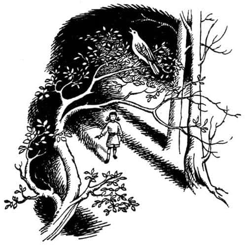
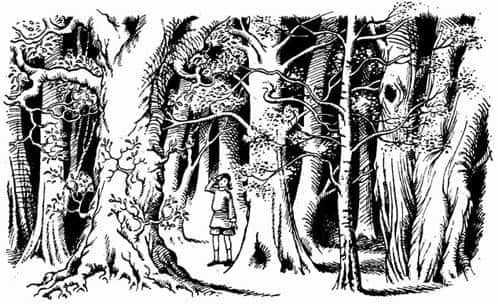
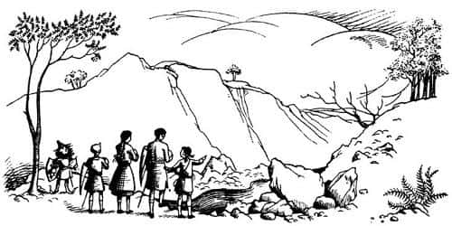

Lucy’nin Gördüğü Şey
Son burnu geçerek, Billursu Körfezi’nden içeriye doğru dönüp yolculuklarının son bölümüne başladıklarında Susan ve iki oğlan müthiş yorgundular. Bir yandan güneş altında saatlerce yol almak, öte yandan suyun yansısı Lucy’nin başını ağrıtmıştı. Yaygaracı bile yolculuğun bitmesini arzuluyordu. Dümen tutmak için oturduğu yer cücelere göre değil, normal insanlara göre yapılmıştı; ayakları sintine tahtalarına ulaşmıyordu. Bu halde on dakika bile durmanın ne kadar rahatsızlık verdiğini hepiniz bilirsiniz. Çocukların yorgunlukları arttıkça hevesleri azalıyordu. O ana kadar Caspian’a ulaşmaktan başka bir şey düşünmemişlerdi. Oysa şimdi, onu bulduklarında ne yapacaklarını düşünüyorlardı. Bir avuç cüce ve orman yaratığının, yetişkin insanların oluşturduğu bir orduyu nasıl yeneceğini merak ediyorlardı.
Billursu Körfezi’nin kıvrımlarını izleyerek içerilere doğru kürek çekerlerken, yavaş yavaş karanlık çöküyordu. Körfezin iki yakası birbirine doğru yaklaşıyor, her iki yandan sarkan ağaçlar başlarının üzerinde neredeyse birbirine kavuşuyordu. Karanlık giderek koyulaştı. Artık arkalarında bıraktıkları denizin sesi duyulmuyordu. Etraf çok sessizdi. Ormanın içlerinden Billursu’ya kavuşan dereciklerin şıpırtısını dinliyorlardı. Sonunda yorgun argın kıyıya çıktılar.
Ateş yakmaya bile güçleri kalmamıştı. Bu nedenle bir şeyler yakalamak ya da vurmak yerine, elmadan ibaret bir akşam yemeğini yeğlediler (bir daha asla elma görmek istememelerine rağmen). Sessizce yenen bir yemekten sonra hep beraber dört büyük kayın ağacının arasındaki kuru yapraklar ve yosunların üzerinde, birbirlerine sokularak yattılar.
Lucy dışında hemen herkes uyudu. Lucy diğerlerinden daha az yorulduğu için uyumakta zorluk çekiyordu. O ana kadar cücelerin horladığını unutmuştu. Uykuya dalmanın en iyi yollarından birinin, kendini zorlamaktan vazgeçmek olduğunu bildiği için gözlerini açtı. Çalılıkların dalları arasındaki boşluktan Billursu’nun bir bölümünü görebiliyordu. Yukarıya, gökyüzüne baktı. İşte oradaydılar! Onca yıldan sonra, parlak Narnia yıldızlarını yeniden görmüştü! Heyecandan çıldıracak gibiydi. Bir zamanlar Narnia’da kraliçeyken, İngiltere’de yattığı saatten çok daha geç yatardı. Bu nedenle buradaki yıldızları, dünyanın yıldızlarından daha iyi bilirdi. Uzandığı yerden yaz takımyıldızlarının en azından üçünü görebiliyordu. Gemi, Çekiç ve Leopar. “Sevgili yaşlı Leopar” diye mutlulukla mırıldandı kendi kendine.
Uykusu gelmiyor, aksine kaçıyordu; uyurgezerliğe benzeyen tuhaf bir sersemlik vardı üzerinde. Körfez gittikçe aydınlanıyordu. Onu görememesine rağmen şimdi ayın, körfezin üzerinde olduğunu anlamıştı. Bütün ormanın, tıpkı kendisi gibi uyanmakta olduğu hissine kapıldı. Bilinçsizce, çabucak kalktı ve yattıkları yerin biraz ötesine doğru yürüdü.
“Bu çok hoş” diye kendi kendine mırıldandı Lucy. Serin, berrak havada her yerden hoş kokular yayılıyordu. Yakınlarda bir yerde, bir bülbülün cıvıltısının kesilip, yeniden başladığını işitti. İlerisi biraz daha aydınlıktı. Işığa doğru yürüyerek ağaçların daha seyrek olduğu bir yere geldi. Ağaçların arasında kalan boşluklardan sızan ayışığı ufak ışık öbekleri yaratıyordu, ama bu ışıkta beliren nesnelerin ne olduğunu anlamak hayli güçtü. O anda, sonunda sesini akort etmeyi becerdiği anlaşılan bülbül bir şarkıya başladı.

Gözleri ışığa alışmaya başlayan Lucy, kendisine en yakın olan ağaçları belirgin bir şekilde görüyordu. Ağaçların konuşabildiği Narnia’daki o eski günlerin özlemi, bütün benliğini sardı. Eğer uyandırabilirse, bu ağaçların tıpkı birer insan gibi konuşacağından emindi. Gümüş renkli bir huş ağacına baktı – yumuşak, şırıl şırıl akan su gibi bir sesi olurdu. Dans etmekten hoşlanan, saçları darmadağın narin bir kıza benzerdi. Meşe ağacına baktı – kızıl sakallı, pörsümüş ellerinde ve yüzünde et benleri olan kıllı, sempatik bir yaşlı adam gibi olurdu. Dibinde durduğu kayın ağacına baktı. Ah! En iyileri o olurdu – hoş ve görkemli, zarif bir tanrıça, ormanın hanımefendisi…
“Ah ağaçlar, ağaçlar, ağaçlar” dedi Lucy (konuşmaya niyeti olmamasına rağmen). “Ah ağaçlar uyanın, uyanın, uyanın. Hatırlamıyor musunuz? Beni hatırlamıyor musunuz? Orman perileri, ağaç perileri, çıkın ortaya, konuşun benimle.”
En ufak bir esinti olmamasına rağmen, çevresindeki bütün ağaçlar kıpırdandı. Hışırdayan yapraklar sanki bir şeyler söylüyordu. Bülbül onlara kulak verircesine sustu. Lucy, ağaçlardan çıkan sesleri anlamak üzere olduğu hissine kapıldı. Ne var ki o an hiç gelmedi. Hışırtı kesildi. Bülbül tekrar ötmeye başladı. Ayışığına rağmen orman, yine eski sıradanlığına büründü. O sırada Lucy (hani bazen bir isim ya da tarih hatırlamaya çalışırken, tam hatırlamak üzere olduğunuz sırada unutup gidersiniz) az farkla bir şeyleri kaçırdığı izlenimine kapılmıştı. Sanki ağaçlara, bir saniye erken ya da bir saniye geç seslenmişti. Belki de bir kelime dışında tüm doğru sözleri söylemişti. Kullanmaması gereken bir kelime kullanmış olabilirdi.

Aniden bir yorgunluk çöktü üzerine. Kamp yerine geri döndü, Susan’la Peter’in arasına sokuldu ve birkaç dakika sonra uyuyakaldı.
Ertesi sabah üşümüş ve neşesiz bir halde uyandılar. Ormanda kurşuni bir alacakaranlık vardı (güneş henüz doğmamıştı). Her şey nemli ve kirliydi.
“Elmalar, heyhat” dedi Yaygaracı yalancıktan bir gülümsemeyle. “Siz eski kral ve kraliçelerin yardımcılarınıza iyi bakmadığınızı söylemeliyim!” Ayağa kalkıp silkindiler ve etraflarına baktılar. Ağaçlar sıktı. Birkaç metre ötesini göremiyorlardı.
“Sanırım Ekselansları yolu biliyordur” dedi Cüce.
“Bilmiyorum” dedi Susan. “Hayatım boyunca bu ağaçları hiç görmedim. Aslında, nehri takip etmemiz gerektiğini düşünüyordum.”
Peter tatlı sert, “Madem öyleydi, bunu önceden söylemeni beklerdim” diye cevapladı.
“Ona bakma sen” dedi Edmund. “Her zaman oyunbozanlık yapar. O cep pusulası hâlâ yanında, değil mi Peter? Kuzeybatı yönünden ayrılmamalıyız. Bu şekilde doğru yolda olduğumuzdan emin olabiliriz. O küçük nehri geçip – ismi neydi? Dilimin ucunda!”
“Anladım” dedi Peter. “Büyük nehre, Beruna Sığlıkları’nda ya da S.K.D.’nin dediği gibi, Beruna Köprüsü’nde karışan nehir.”
“Doğru. Onu geçip yokuş yukarı vurursak Taş Masa’ya (yani Aslan’ın Kümbeti’ne) saat sekiz dokuz gibi ulaşırız. Umarım Kral Caspian bize iyi bir kahvaltı verir!”
“Umarım yanılmıyorsundur” dedi Susan. “Ben hiçbir şey hatırlamıyorum.”
Edmund, “Bu kızların en kötü yanı” dedi Peter’le Cüce’ye, “yön duygularının hiç gelişmemiş olması.”
“Aklımıza takılan bir şeyler var da ondan” dedi Lucy.
Başlangıçta her şey yolundaydı. Eskiden kalma bir patika bulduklarını bile düşündüler. Ancak orman hakkında biraz bilginiz varsa, bunun bir hayalden ibaret olduğunu tahmin edebilirsiniz. Daha beş dakika geçmeden yolunuzu kaybeder, bambaşka bir yola saparsınız (ve onun başka bir yol değil, aynı yolun devamı olduğunu zannedersiniz). Bir süre sonra o yolu da kaybedersiniz. Ta ki doğru yoldan iyice ayrılıp, izlediğiniz yollardan hiçbirinin gerçek bir patika olmadığını anlayana kadar. Ne var ki ormana alışık olan oğlanlar ve cücenin, yanıldıklarını anlamaları için birkaç saniye yetiyordu.
Ağır adımlarla (önceki gün kürek çektikleri için üçü de çok yorgundu) yarım saat kadar yürümüşlerdi. Yaygaracı aniden, “Durun” diye fısıldadı. Durdular. “Biri bizi takip ediyor” dedi alçak bir sesle. “Daha doğrusu bizimle beraber gelen biri. Orada, sol tarafta.” Oldukları yerde kalıp kulak kesildiler ve pür dikkat çevreye göz gezdirdiler. “Sen ve ben oklarımızı hazırlasak iyi olacak” dedi Susan, Yaygaracı’ya. Cüce başıyla onayladı. İki yay da atışa hazır olunca takım yeniden harekete geçti.
Oldukça seyrek olan ormanlık alanda, dikkatle etrafı gözleyerek kırk elli metre kadar yürüdüler. Sonra çevresinden dolaşıp geçmek zorunda oldukları, ağaçların altındaki çalı örtüsünün geçit vermediği bir yere geldiler. Tam orayı geçerlerken çatırdayan dalların arasından, homurtulu sesiyle yıldırım gibi fırlayan, parıltılı bir canlı göründü. Ödü patlayan Lucy yere düşerken bir yayın tınlaması duyuldu. Lucy kafasını kaldırıp baktığında ürkütücü bir boz ayının, Yaygaracı’nın okuyla böğründen vurulmuş olarak yattığını gördü.
“Bu yarışmayı da S.K.D. kazandı Su” dedi Peter zoraki bir gülümsemeyle. Bu olay onu da çok sarsmıştı.
“Ben – ben çok geç kaldım” dedi Susan utangaç bir sesle. “Bilirsin, ben onun bildiğimiz türden, konuşan bir ayı olduğunu sanmıştım.” Susan öldürmekten nefret ederdi.
“Sorun da burada” dedi Yaygaracı, “hayvanların birçoğu dilsizleşip düşman oldular, fakat hâlâ diğer türden olanlar var. Asla bilemezsin ve anlamak için de bekleyemezsin.”
“Zavallı yaşlı ayı” dedi Susan. “Onun konuşan bir ayı olduğunu düşünmüyorsun değil mi?”
“Hayır, değildi” dedi Cüce. “Yüzünü gördüm, hırlamasını duydum. Tek istediği, kahvaltısı için küçük bir kızdı. Kahvaltıdan söz etmişken, Kral Caspian’ın iyi bir kahvaltı vereceğini umduğunuzu söylediğinizde siz Majestelerinin cesaretini kırmak istemedim. Şimdi size kampta et kıtlığı olduğunu söylemeliyim. Ayrıca ayı eti yemek iyi olur. Ayıyı burada bırakmak ayıp. Parçalayıp birazını almalıyız. Bu iş bizi yarım saatten fazla geciktirmez. Sanırım siz gençler – krallar desem iyi olur – bir ayının derisini yüzmeyi biliyorsunuzdur.”
“Gidip uzakta bir yere oturalım” dedi Susan, Lucy’ye. “Bunun ne kadar kötü ve pis bir iş olduğunu bilirim.” Lucy omuzlarını silkti ve başıyla onayladı. Oturduklarında, “Kafamda öylesine kötü düşünceler dolanıyor ki Su” dedi.
“Nedir?”
“Ya bir gün dünyamızdaki, yurdumuzdaki insanlar, insan görünümü altında, aynı buradaki hayvanlar gibi için için vahşileşirse, kimin ne olduğu anlaşılmazsa ne olacak? Korkunç değil mi?”
Pratik zekâsı gelişkin olan Susan, “Zaten Narnia’da yeterince sorunumuz var” dedi. “Bu tür düşüncelerin sırası değil şimdi.”
Geri döndüklerinde cüce ve oğlanlar, etin iyi kısımlarından taşıyabilecekleri kadarını kesmişlerdi. Çiğ eti cepte taşımak olacak şey değildir, ama taze yapraklara sararak bu işi en iyi şekilde hallettiler. Uzunca bir süre yürüyüp açlık başlarına vurduğunda, bu cıvık ve sevimsiz paketlere farklı bir gözle bakacaklarını bilecek kadar deneyimliydiler.
Güneş doğup kuşlar ötene kadar yorgun argın yola devam ettiler. Etrafları sinek kaynıyordu. Yıkanmayı bekleyen üç çift el için, rastladıkları ilk derede mola verdiler.
Bir gün önce kürek çektikleri için tutulan kasları gevşemeye başlamıştı. Herkesin morali yükseldi. Hava giderek ısındı ve miğferlerini çıkarıp ellerine aldılar.
Bir saate yakın yürüyüşten sonra, “Umarım doğru yoldayızdır” dedi Edmund.
“Sola sapma işini abartmadığımız sürece sorun yok” dedi Peter. “Ama sağa sapıp da yolumuzu kaybedersek, bu kez de nehre erken varır, kestirme yolu kaçırırız.”
Zincir zırhların şakırtısı ve ayak sesleri dışında hiçbir ses çıkarmaksızın, yorgun argın, yeniden yola düştüler.
“Nerede bu kahrolası Azgın Nehir?” dedi Edmund epey bir süre sonra.
“Şimdiye kadar çoktan varmış olmamız gerekirdi” dedi Peter. “Devam etmekten başka çare yok.” İkisi de cücenin endişeli bakışlarının farkındaydı, ama bir şey söylemediler. Ağır zincir zırhların içinde sıcaktan bunalmış, bitap bir halde yürümeyi sürdürdüler.
“Bu da ne?” dedi Peter aniden. Farkında olmaksızın vadiye bakan derin bir yamacın kenarına gelmişlerdi. Aşağılarda bir nehir görünüyordu. Karşı yakadaki kayalıklar çok sarptı. Edmund dışında kimse (belki bir de Yaygaracı) o kayalıklara tırmanamazdı.
“Üzgünüm” dedi Peter. “Bu yolu izlemek benim hatamdı. Kaybolduk. Daha önce hiç görmediğim bir yer burası.”
Cüce dişlerinin arasından hafif bir ıslık koyuverdi.
“Geri dönüp diğer yoldan gidelim” dedi. Susan. “Bu ormanlarda kaybolacağımızı baştan beri biliyordum.”
“Susan!” dedi Lucy sitemle, “Zaten her şey kötü, bir de sen dırdır etme. Edmund elinden geleni yapıyor işte!”
“Ama sen de Su’yu böyle tersleme” dedi Edmund. “Bence tamamen haklı.”
“Tekneler ve kaplumbağa kabukları!” diye bağırdı Yaygaracı. “Gelirken kaybolduysak, dönüşte yolumuzu nasıl buluruz ki? Ayrıca adaya geri dönüp sil baştan işe koyulmak yerine – bunu yapabileceğimizi düşünsek bile – her şeyden vazgeçmek daha iyi olur. Bu gidişle Miraz biz oraya varmadan önce Caspian’ın işini bitirir.”
“Devam etmemiz gerektiğini mi düşünüyorsun?” dedi Lucy.
“Yüce Kral’ın kaybolduğundan emin değilim” dedi Yaygaracı. “Bunun Azgın Nehir olmadığı ne malum?”
“Çünkü Azgın Nehir bir vadinin içinde değil” dedi Peter öfkesine hâkim olmaya çalışarak.
“Majesteleri değil diyor” diye cevapladı cüce, “ama değildi demeniz gerekmez mi? Siz bu ülkenin yüzlerce – belki de binlerce – yıl önceki halini tanıyordunuz. Değişmiş olamaz mı? Bir toprak kayması şu çıplak kayaları geride bırakarak tepenin yarısını göçürmüş olabilir. İşte size vadinin öte yanındaki uçurumlar. Daha sonra Azgın Nehir bu tarafta derin yamaçlar oluşuncaya kadar yatağını derinleştirmeye devam etmiş olabilir.
“Bu hiç aklıma gelmemişti” dedi Peter.
“Ve zaten” diye devam etti Yaygaracı, “aşağı yukarı kuzeye doğru akan bu nehir Azgın Nehir değilse bile Büyük Nehir’e kavuşmak zorunda. Aşağıya gelirken geçtiğim nehir o olmalı. Eğer öyleyse nehrin aktığı yöne, yani sağa doğru gidersek Büyük Nehir’e ulaşacağız demektir. Belki tahmin ettiğimiz zamanda varamayız, ama benim dediğim şekilde gidersek sonunda varırız hedefimize.”
“Yaygaracı, sen bir harikasın” dedi Peter. “Haydi öyleyse. Vadinin bu tarafından aşağı inelim.”
“Bakın! Bakın! Bakın!” diye bağırdı Lucy.
“Nereye? Ne?” diye sordu herkes.
“Aslan” dedi Lucy. “Aslan bu! Görmediniz mi?” Lucy’nin yüzü aydınlanmıştı ve gözleri parlıyordu.
“Sahiden gördün mü?” diye söze girdi Peter.
“Onu gördüğünü sandığın yer neresi?” diye sordu Susan.
“Büyükler gibi konuşma” dedi Lucy, ayağını yere vurarak. “Onu gördüğümü sanmıyorum… Onu gördüm.”
“Nerede Lu?” diye sordu Peter.
“Şu yukarıdaki dişbudakların arasında. Hayır, vadinin bu yanında. Yani yukarıda, aşağıda değil. Gitmek istediğiniz yolun tam tersinde. Ve onu takip etmemizi istedi.”
“Onun bunu istediğini nereden biliyorsun?” diye sordu Edmund.
“Ben – ben biliyorum işte” dedi Lucy, “yüzünden anladım.” Diğerleri şaşkınlıktan dillerini yutmuş bir halde birbirlerine baktılar.

“Majesteleri bir aslan görmüş olabilir” diye araya girdi Yaygaracı. “Bana bu ormanlarda aslanlar olduğunu söylediler. Eminim en az ayı kadar konuşkan, en az ayı kadar dost canlısı bir aslandır.”
“Hadi, aptallığın lüzumu yok” dedi Lucy. “Tanımadığım bir aslanı mı gördüğümü sanıyorsun?”
“Daha önce tanıdığınız aslan olsaydı” dedi Yaygaracı, “oldukça yaşlı olurdu. Ayrıca aynı aslan olsa bile, diğer pek çoğu gibi onun da vahşileşip aptallaşmasını ne önleyebilir ki?”
Lucy kıpkırmızı oldu. Sanırım Peter kolunu tutmasaydı Yaygaracı’ya saldırırdı. “S.K.D. anlamıyor. Neden anlasın ki? Aslan’ı gerçekten tanıdığımızı kabul etmelisin Yaygaracı, yani biraz tanıdığımızı demek istiyorum. Ayrıca bir daha onun hakkında böyle konuşmamalısın. Birincisi, şans getirmez; ikincisi saçmalık olur. Tek sorun Aslan’ın gerçekten orada olup olmadığı.”
“Ama ben orada olduğunu biliyorum” dedi gözleri yaşlarla dolan Lucy.
“Evet Lu, ama görüyorsun ki biz bilmiyoruz” dedi Peter.
“Oylama yapmaktan başka çare yok” dedi Edmund.
“Pekâlâ” diye cevapladı Peter. “Sen en yaşlımızsın S.K.D. Önce sen söyle: Yukarıya mı, aşağıya mı?”
“Aşağıya” dedi Cüce. “Benim Aslan hakkında hiçbir fikrim yok, ama sola dönüp boğazı yukarı doğru takip edersek, nehri geçeceğimiz yeri bulmak bütün günümüzü alabilir. Oysa sağa dönüp aşağıya inersek, iki saate kalmaz Büyük Nehir’e ulaşırız. Eğer çevrede gerçek aslanlar varsa, değil onları takip etmek, aksine kaçmak gerekir.”
“Sen ne diyorsun Susan?”
“Kızma bana Lu” dedi Susan, “ama aşağıya gitmek gerektiğini düşünüyorum. Yorgunluktan ölmek üzereyim. Bu kötü ormanların dışına mümkün olduğunca çabuk çıkalım. Üstelik senin dışında hiç kimse bir şey görmedi.”
“Edmund?” dedi Peter.
“Şey, şu da var” dedi Edmund, aceleyle konuşarak ve biraz da kızararak, “Narnia’yı bir yıl önce – ya da bin yıl önce, her neyse – ilk keşfeden Lucy’ydi ve hiçbirimiz ona inanmamıştık. İçinizde en saçma davranan da bendim, biliyorum. Ancak o, her şeye rağmen haklıydı. Bu kez ona inanmak daha doğru olmaz mı? Ben oyumu yukarıya gitmekten yana kullanıyorum.”
“Ah, Ed!” dedi Lucy, Edmund’un elini tutarak.
“Şimdi sıra sende Peter” dedi Susan, “umarım sen de—”
“Bir dakika! Bir dakika! Düşünmeme izin ver” diye sözünü kesti Peter. “Oy kullanmamayı yeğlerdim.”
“Sen Yüce Kral’sın” dedi Yaygaracı ciddi bir ifadeyle.
“Aşağıya” dedi Peter uzun bir duraklamadan sonra. “Lucy’nin haklı olabileceğini biliyorum, ama elimde değil. Birini seçmek zorundayız.”
Böylece uçurum boyunca, sağa, nehrin aktığı yöne doğru yola koyuldular.
Lucy grubun en arkasında yürüyor, hıçkıra hıçkıra ağlıyordu.